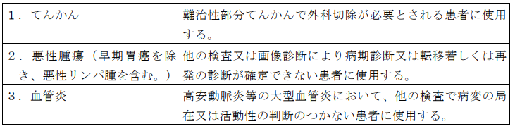

１ 15Ｏ標識ガス剤を用いた場合（一連の検査につき） 7,625点
２ 18ＦＤＧを用いた場合（一連の検査につき） 8,625点
注
１ 15Ｏ標識ガス剤の合成及び吸入並びに18ＦＤＧの合成及び注入に要する費用は
、所定点数に含まれる。
２ 別に厚生労働大臣が定める施設基準に適合しているものとして地方厚生局長等
に届け出た保険医療機関において行われる場合に限り算定する。
３ 別に厚生労働大臣が定める施設基準に適合しているものとして地方厚生局長等
に届け出た保険医療機関以外の保険医療機関において行われる場合は、所定点数の100分の80に相当する点数により算定する。
４ 新生児、３歳未満の乳幼児（新生児を除く。）又は３歳以上６歳未満の幼児に
対して断層撮影を行った場合は、新生児加算、乳幼児加算又は幼児加算として、1,600点、1,000点又は600点を所定点数に加算する。ただし、注３の規定により所定点数を算定する場合においては、1,280点、800点又は480点を所定点数に加算する。
通知
(１) ポジトロン断層・コンピューター断層複合撮影は、Ｘ線ＣＴ組合せ型ポジトロンＣＴ装
置を用いて、診断用の画像としてポジトロン断層撮影画像、コンピューター断層撮影画像及び両者の融合画像を取得するものをいい、ポジトロン断層撮影画像の吸収補正用としてのみコンピューター断層撮影を行った場合は該当しない。また、撮影の方向、スライスの数、撮影の部位数及び疾患の種類等にかかわらず所定点数により算定する。
(２) 同一月に、区分番号「Ｅ２００」コンピューター断層撮影（ＣＴ撮影）を行った後にポ
ジトロン断層・コンピューター断層複合撮影を行う場合は、本区分は算定せず、区分番号「Ｅ１０１－２」ポジトロン断層撮影により算定する。この場合においては、区分番号「Ｅ１０１－２」の別に厚生労働大臣が定める施設基準に適合しているものとして地方厚生（支）局長に届け出ていなくても差し支えない。
(３) 18ＦＤＧを用いたポジトロン断層・コンピューター断層複合撮影については、てんかん若
しくは血管炎の診断又は悪性腫瘍（早期胃癌を除き、悪性リンパ腫を含む。）の病期診断若しくは転移・再発の診断を目的とし、次の表に定める要件を満たす場合に限り算定する。ただし、表中の「画像診断」からは、コンピューター断層撮影を除く。次の表に定める要件は満たさないが、区分番号「Ｅ１０１－２」ポジトロン断層撮影に定める要件を満たす場合は、区分番号「Ｅ１０１－２」により算定する。
(４) 18ＦＤＧ製剤を医療機関内で製造する場合は、18ＦＤＧ製剤の製造に係る衛生管理、品質
管理等については、関係学会の定める基準を参考として、十分安全な体制を整備した上で実施すること。なお、高安動脈炎等の大型血管炎の診断に用いる18ＦＤＧ製剤については、当該診断のために用いるものとして薬事承認を得ている18ＦＤＧ製剤を使用した場合に限り算定する。
(５) 撮影に当たって造影剤を使用した場合は、区分番号「Ｅ２００」コンピューター断層撮
影（ＣＴ撮影）の「注３」の加算を本区分に対する加算として併せて算定する。
(６) 当該画像診断を実施した同一月内に悪性腫瘍の診断の目的で区分番号「Ｅ１００」シン
チグラム（画像を伴うもの）（ガリウムにより標識された放射性医薬品を用いるものに限る。）又は区分番号「Ｅ１０１－４」ポジトロン断層・磁気共鳴コンピューター断層複合撮影を実施した場合には、主たるもののみを算定する。
(７) 15Ｏ標識ガス剤を用いた場合に当該画像診断に伴って行われる血液ガス分析の費用は所
定点数に含まれ、別に算定できない。
(８) ターゲットガス（窒素、酸素、二酸化炭素）等の15Ｏ標識ガス剤の合成及び吸入に係る費
用並びに18ＦＤＧの合成及び注入に係る費用は所定点数に含まれ、別に算定できない。
(９) 放射性医薬品の管理に当たっては、専門の知識及び経験を有する放射性医薬品管理者を
配置することが望ましい。